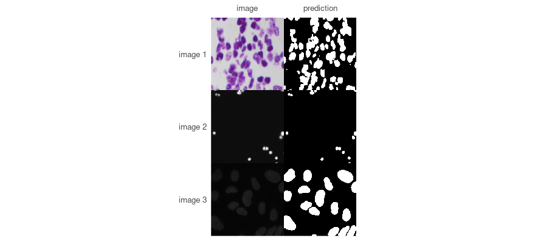
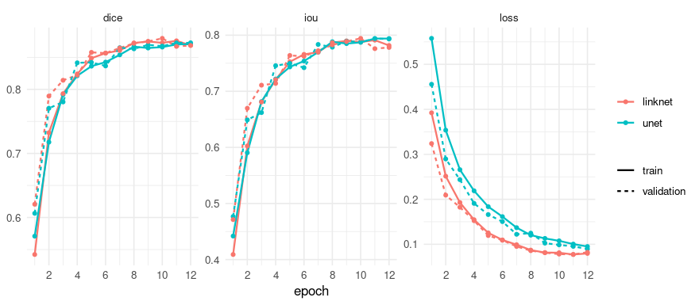
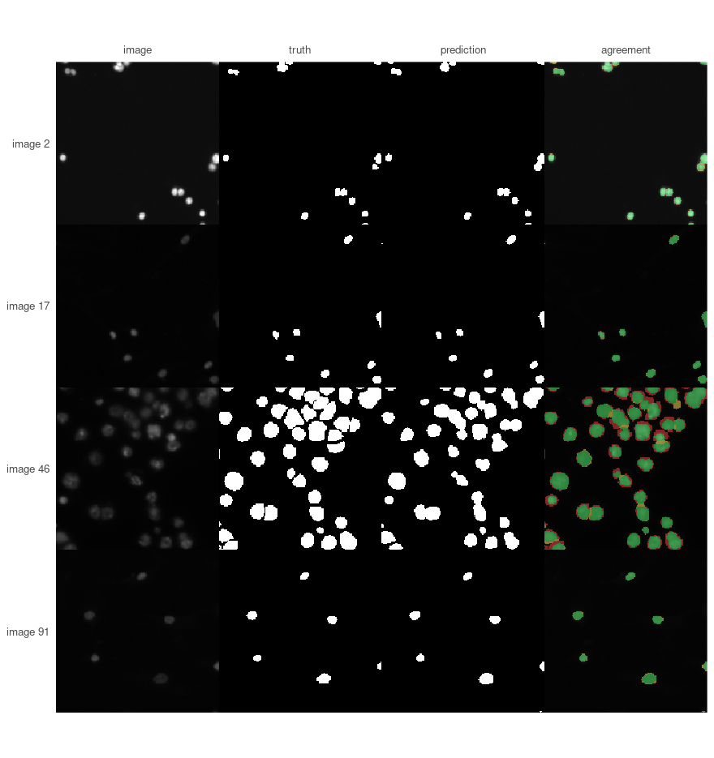

Finding nuclei in the 2018 Data Science Bowl
Source:vignettes/data-science-bowl.Rmd
data-science-bowl.RmdThe 2018 Data Science Bowl asked for the nuclei in microscopy images: several hundred pictures, taken down different microscopes under different stains, each with its nuclei outlined. It is a good first problem because it is genuinely varied and genuinely small.
This walks through it end to end. Every number and every picture below was produced by running the code shown.
Before any of that: a mask in four lines
A model trained on this data is published, so the shortest way to see whether the package does anything useful is to borrow it. No training, no waiting:
validation_dir <- file.path(data_dir, "stage1_validation")
published <- platypus_spec(
data = segmentation_data(validation_dir, validation_dir, colormap = binary_colormap),
models = list(u_net("nuclei", input_shape = c(256, 256), blocks = 4, filters = 16,
weights = "dsbowl-unet", fit = FALSE))
)
borrowed <- platypus_fit(published, verbose = FALSE)
masks <- predict(borrowed, split = "validation")
dim(masks)
#> [1] 134 256 256
found <- list.files(validation_dir, pattern = "[.]png$", recursive = TRUE, full.names = TRUE)
images <- read_images(head(grep("/images/", found, value = TRUE), 3), size = c(256, 256))
plot_masks(images, prediction = masks[1:3, , ], colormap = binary_colormap,
which = 1:3)
The weights came down from the Hub on first use and are cached afterwards, so running this again costs nothing.
No score is reported here, on purpose. This directory and the one the weights were trained on come from the same collection and overlap, so anything measured here would flatter the model. The numbers that mean something were measured on a held-out split when the weights were published, and travel with them:
available_weights()[, c("name", "revision")]
#> name revision
#> 1 dsbowl-unet 5e035c6a39827c33e19507affb9415c3908ae383The description in that table is the part to read before trusting them - these are semantic, so touching nuclei come back as one region and a count taken from them would be wrong.
One thing worth meeting here rather than later. Weights belong to an exact model, not to a task, and the rest of this vignette trains at 160 x 160 while these were trained at 256:
mismatched <- platypus_spec(
data = segmentation_data(validation_dir, validation_dir, colormap = binary_colormap),
models = list(u_net("nuclei", input_shape = c(160, 160), blocks = 4, filters = 16,
weights = "dsbowl-unet", fit = FALSE))
)
platypus_fit(mismatched)
#> Error in `platypus_fit()`:
#> ! 'dsbowl-unet' was trained for a different model:
#> - input_shape: weights say (256, 256), the model says (160, 160)
#> Loading anyway would either fail inside torch or, where the shapes happen to agree, produce a model that predicts confidently and means nothing.Refused, with the field that differs, before anything was loaded. That check exists because the failure it prevents is silent: weights trained on a different colormap with the same number of classes load perfectly and predict nonsense.
Everything below trains a model from scratch instead, which is what you will actually do on your own data - the published weights are a demonstration and a baseline, not an answer to your problem.
The data
One directory per image, each holding an images and a
masks subdirectory. The masks subdirectory holds
one file per nucleus, which is common enough that
platypus combines them for you.
data_dir <- "data_science_bowl"Look at it before training on it
The most useful thing to know before choosing anything else is how much of each picture is actually the thing you are looking for.
foreground <- function(sample) {
mask <- unite_masks(lapply(
list.files(file.path(sample, "masks"), full.names = TRUE),
function(path) read_masks(path, binary_colormap, size = c(160, 160))[1, , ]
))
mask_coverage(mask)$fraction[2]
}
samples <- sort(list.dirs(valid, recursive = FALSE))
set.seed(1)
share <- vapply(samples[sample(length(samples), 40)], foreground, numeric(1))
round(summary(share), 3)
#> Min. 1st Qu. Median Mean 3rd Qu. Max.
#> 0.011 0.037 0.115 0.127 0.205 0.334Nuclei are a minority of the pixels in every image, and how small a minority varies by a factor of thirty between images. Both facts are worth acting on now rather than discovering later.
Because the foreground is a minority, a model that predicts
“background” everywhere and finds nothing at all still scores well on
accuracy, and well on a Dice averaged over both classes. So the metrics
below are asked for with include_background = FALSE: the
number reported is then the one about the nuclei, and a model that finds
none of them scores zero, as it should.
Because the share varies so much, the loss has to hold up at both
ends. Plain cross-entropy will happily settle into predicting background
on the sparse images; blending it with Dice, or using Focal-Tversky with
alpha above a half, keeps the rare class worth getting
right.
The specification
Two models, so there is something to compare. They share the data and differ in architecture and objective.
spec <- platypus_spec(
data = segmentation_data(
train = train,
validation = valid,
test = file.path(data_dir, "stage1_test"),
colormap = binary_colormap
),
models = list(
u_net(
"unet",
input_shape = c(160, 160),
blocks = 4, filters = 16,
loss = loss_cce_dice(),
metrics = list(metric_dice(include_background = FALSE),
metric_iou(include_background = FALSE)),
augmentation = list(
augmentation_step("HorizontalFlip", p = 0.5),
augmentation_step("VerticalFlip", p = 0.5),
augmentation_step("RandomRotate90", p = 0.5)
),
epochs = 12, batch_size = 16
),
linknet(
"linknet",
input_shape = c(160, 160),
blocks = 4, filters = 16,
loss = loss_focal_tversky(alpha = 0.7),
metrics = list(metric_dice(include_background = FALSE),
metric_iou(include_background = FALSE)),
callbacks = list(callback_early_stopping("val_dice", patience = 5)),
epochs = 12, batch_size = 16
)
)
)
spec
#> platypus specification
#> data : /home/maju116/Desktop/PROJECTS/Personal Projects/PLATYPUS FAMILY/pyplatypus/examples/data/data_science_bowl/stage1_train
#> classes : 2
#> models : 2
#> unet u_net 160x160, cce_dice, 12 epochs
#> linknet linknet 160x160, focal_tversky, 12 epochsThe alpha = 0.7 on LinkNet’s Focal-Tversky weights false
negatives above false positives: it would rather flag something that is
not a nucleus than miss one. Whether that is the right trade depends
entirely on what the count is for.
Train
fit <- platypus_fit(spec)
fit
#> platypus fit
#> models : unet, linknet
#> device : NVIDIA GeForce GTX 1070 (torch 2.7.1+cu126)
#> epochs : linknet=12, unet=12
#> next : evaluate(fit), predict(fit, "unet")
plot(fit)
Compare
evaluate(fit)
#> model architecture loss_function parameters epochs_run best_epoch
#> 1 unet u_net cce_dice 1942594 12 12
#> 2 linknet linknet focal_tversky 1746754 12 11
#> loss dice iou
#> 1 0.08948598 0.8726893 0.7932749
#> 2 0.07810771 0.8796270 0.7943703Read the loss column with care, and note that
loss_function sits beside it. These two models were trained
on different objectives, so their losses are not on a common scale - a
Focal-Tversky of 0.31 is not better or worse than a CCE-Dice of 0.22, it
is not the same question. The metrics are comparable, because they
measure the mask rather than the objective.
Look at what it did
plot_masks(
images,
prediction = predictions[shown, , ],
truth = truth,
colormap = binary_colormap,
labels = paste("image", shown)
)
The last column is the one that repays attention. Green is what was found, red what was missed, yellow what was invented - and a single overlap score cannot tell you which of the three you have.
Here almost all of the red is a thin rim around nuclei that were otherwise found. The model is locating nuclei well and drawing them slightly too small. If the question is how many nuclei are there, that hardly matters. If it is how large are they, it is exactly what matters - and the fix is a longer run or a loss that weights boundaries, not a different architecture.
Neither the Dice above nor any other single number distinguishes those two situations from a model that found three quarters of the nuclei and missed the rest. That is the reason to draw the picture.
The same thing from a file
Everything above can live in a YAML file instead, which is easier to keep beside results and to hand to someone else. The two routes produce the same object, and nothing downstream can tell them apart.
spec <- platypus_spec("experiment.yaml")
fit <- platypus_fit(spec)A note on older graphics cards
PyTorch 2.8 and later ship CUDA 13 builds, and CUDA 13 dropped the Maxwell, Pascal and Volta generations - a GTX 10-series card cannot run them, and no driver update changes that. Without saying anything, everything would run on the processor instead, perhaps ten times slower.
If platypus_device() reports cpu on a
machine that has a GPU, restart R and ask for the older build before
anything else:
library(platypus)
platypus_use_torch("pascal")
platypus_device()
#> torch : 2.7.1+cu126
#> cuda build : 12.6
#> device : NVIDIA GeForce GTX 1070